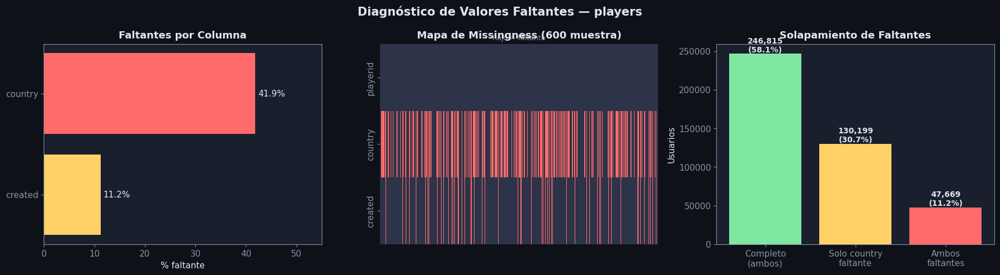
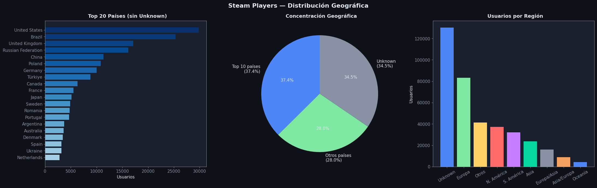
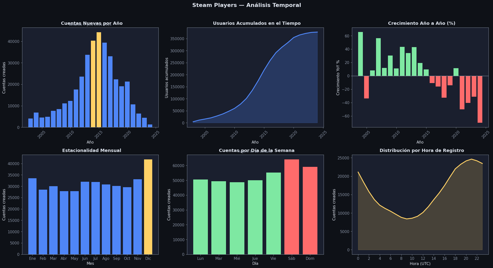
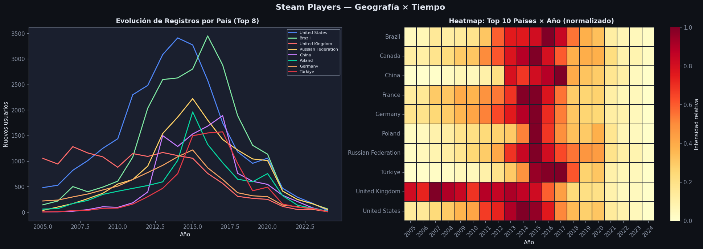
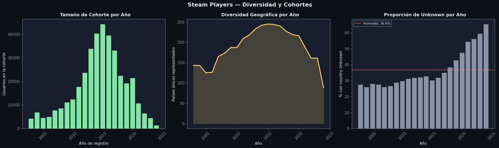

EDA: players#
Descripción: Lista de usuarios de Steam con su país de residencia y fecha de creación de cuenta.
Columna |
Tipo |
Descripción |
|---|---|---|
|
int |
ID único del usuario en Steam |
|
str |
País de residencia del usuario |
|
datetime |
Fecha y hora de creación del perfil |
Imports y configuración#
import pandas as pd
import numpy as np
import matplotlib.pyplot as plt
import seaborn as sns
import warnings
warnings.filterwarnings('ignore')
DARK_BG = '#0e1117'
CARD_BG = '#1a1f2e'
ACCENT1 = '#4f86f7'
ACCENT2 = '#7ee8a2'
ACCENT3 = '#ff6b6b'
ACCENT4 = '#ffd166'
TEXT = '#e0e6f0'
MUTED = '#8892a4'
plt.rcParams.update({
'figure.facecolor': DARK_BG, 'axes.facecolor': CARD_BG,
'axes.edgecolor': MUTED, 'axes.labelcolor': TEXT,
'xtick.color': MUTED, 'ytick.color': MUTED,
'text.color': TEXT, 'grid.color': '#2d3348',
'grid.alpha': 0.6, 'font.family': 'DejaVu Sans',
'font.size': 11,
})
def title_ax(ax, txt, sub=None):
ax.set_title(txt, fontsize=13, fontweight='bold', color=TEXT, pad=8)
if sub:
ax.text(0.5, 1.02, sub, transform=ax.transAxes, ha='center', fontsize=9, color=MUTED)
Carga y exploración inicial#
df_raw = pd.read_csv('Datos/players.csv')
print(f"Shape: {df_raw.shape[0]:,} filas × {df_raw.shape[1]} columnas")
df_raw.head(5)
Shape: 424,683 filas × 3 columnas
| playerid | country | created | |
|---|---|---|---|
| 0 | 76561198287452552 | Brazil | 2016-03-02 06:14:20 |
| 1 | 76561198040436563 | Israel | 2011-04-10 17:10:06 |
| 2 | 76561198049686270 | NaN | 2011-09-28 21:43:59 |
| 3 | 76561198155814250 | Kazakhstan | 2014-09-24 19:52:47 |
| 4 | 76561198119605821 | NaN | 2013-12-26 00:25:50 |
print(df_raw.dtypes)
print("\nEstadísticas básicas:")
df_raw.describe(include='all')
playerid int64
country object
created object
dtype: object
Estadísticas básicas:
| playerid | country | created | |
|---|---|---|---|
| count | 4.246830e+05 | 246815 | 377014 |
| unique | NaN | 249 | 376781 |
| top | NaN | United States | 2012-01-09 14:06:15 |
| freq | NaN | 29808 | 8 |
| mean | 7.656120e+16 | NaN | NaN |
| std | 3.995359e+08 | NaN | NaN |
| min | 7.656120e+16 | NaN | NaN |
| 25% | 7.656120e+16 | NaN | NaN |
| 50% | 7.656120e+16 | NaN | NaN |
| 75% | 7.656120e+16 | NaN | NaN |
| max | 7.656120e+16 | NaN | NaN |
Análisis y tratamiento de valores faltantes#
missing = df_raw.isnull() | (df_raw.apply(lambda col: col.astype(str).str.strip() == ''))
miss_pct = (missing.mean() * 100).round(2)
print("Porcentaje de faltantes por columna:")
print(miss_pct.to_string())
both_missing = (df_raw['country'].isna() & df_raw['created'].isna()).sum()
only_country = (df_raw['country'].isna() & df_raw['created'].notna()).sum()
only_created = (df_raw['country'].notna() & df_raw['created'].isna()).sum()
print(f"\nAmbos faltantes (country + created) : {both_missing:,}")
print(f"Solo country faltante : {only_country:,}")
print(f"Solo created faltante : {only_created:,}")
Porcentaje de faltantes por columna:
playerid 0.00
country 41.88
created 11.22
Ambos faltantes (country + created) : 47,669
Solo country faltante : 130,199
Solo created faltante : 0
fig, axes = plt.subplots(1, 3, figsize=(18, 5))
fig.patch.set_facecolor(DARK_BG)
fig.suptitle('Diagnóstico de Valores Faltantes — players', fontsize=15, fontweight='bold', color=TEXT)
ax = axes[0]
cols_m = miss_pct[miss_pct > 0].sort_values()
bars = ax.barh(cols_m.index, cols_m.values,
color=[ACCENT3 if v > 30 else ACCENT4 for v in cols_m.values])
for bar, val in zip(bars, cols_m.values):
ax.text(val + 0.5, bar.get_y() + bar.get_height()/2,
f'{val:.1f}%', va='center', color=TEXT, fontsize=11)
ax.set_xlim(0, 55)
ax.set_xlabel('% faltante')
title_ax(ax, 'Faltantes por Columna')
ax = axes[1]
sample = df_raw.sample(min(600, len(df_raw)), random_state=42)
miss_m = sample.isnull() | (sample.apply(lambda col: col.astype(str).str.strip() == ''))
sns.heatmap(miss_m.T, ax=ax, cbar=False,
cmap=['#2d3348', ACCENT3], yticklabels=True, xticklabels=False)
title_ax(ax, 'Mapa de Missingness (600 muestra)', 'Rojo = faltante')
ax = axes[2]
complete = (df_raw['country'].notna() & df_raw['created'].notna()).sum()
lbls = ['Completo\n(ambos)', 'Solo country\nfaltante', 'Ambos\nfaltantes']
vals = [complete, only_country, both_missing]
colors = [ACCENT2, ACCENT4, ACCENT3]
ax.bar(lbls, vals, color=colors)
for i, v in enumerate(vals):
ax.text(i, v + 2000, f'{v:,}\n({v/len(df_raw)*100:.1f}%)',
ha='center', fontsize=10, color=TEXT, fontweight='bold')
ax.set_ylabel('Usuarios')
title_ax(ax, 'Solapamiento de Faltantes')
plt.tight_layout()
plt.show()

df = df_raw.copy()
df['created'] = pd.to_datetime(df['created'], errors='coerce')
df = df.dropna(subset=['created']).reset_index(drop=True)
df['country'] = df['country'].fillna('Unknown')
df['created_year'] = df['created'].dt.year
df['created_month'] = df['created'].dt.month
df['created_dow'] = df['created'].dt.dayofweek
df['created_hour'] = df['created'].dt.hour
print(f"Original : {df_raw.shape[0]:,} filas")
print(f"Eliminadas: {df_raw.shape[0] - len(df):,} filas (created NaN)")
print(f"Limpio : {len(df):,} filas")
print(f"Country 'Unknown': {(df['country']=='Unknown').sum():,} ({(df['country']=='Unknown').mean()*100:.1f}%)")
print("\nFaltantes después del tratamiento:")
print(df.isnull().sum())
try:
df_private = pd.read_csv('Datos/private_steamids.csv')
private_set = set(df_private['playerid'].tolist())
df['is_private'] = df['playerid'].isin(private_set)
unknown_mask = df['country'] == 'Unknown'
n_priv = (unknown_mask & df['is_private']).sum()
n_pub = (unknown_mask & ~df['is_private']).sum()
print(f'Country Unknown + privado : {n_priv:,} ({n_priv/unknown_mask.sum()*100:.1f}% de los Unknown)')
print(f'Country Unknown + público : {n_pub:,} ({n_pub/unknown_mask.sum()*100:.1f}% de los Unknown)')
print(f'Usuarios is_private=True : {df["is_private"].sum():,} ({df["is_private"].mean()*100:.1f}%)')
except FileNotFoundError:
print(' private_steamids.csv no encontrado — is_private no calculado.')
df['is_private'] = False
Original : 424,683 filas
Eliminadas: 47,669 filas (created NaN)
Limpio : 377,014 filas
Country 'Unknown': 130,199 (34.5%)
Faltantes después del tratamiento:
playerid 0
country 0
created 0
created_year 0
created_month 0
created_dow 0
created_hour 0
dtype: int64
Country Unknown + privado : 84,854 (65.2% de los Unknown)
Country Unknown + público : 45,345 (34.8% de los Unknown)
Usuarios is_private=True : 200,483 (53.2%)
Distribución Geográfica#
Hallazgos#
Estados Unidos lidera con claridad, seguido de Brasil y Reino Unido. EE.UU. representa casi el doble de usuarios que el segundo país.
Rusia, China y Polonia tienen presencias muy relevantes refleja la penetración de Steam en Europa del Este y Asia.
Los 249 países únicos indican cobertura casi global, aunque altamente concentrada: los top 10 países agrupan más del 60% de los usuarios con país conocido.
El 34% de usuarios tiene país ‘Unknown’ (privacidad o perfil sin configurar), lo que limita el análisis geográfico pero no lo invalida.
fig, axes = plt.subplots(1, 3, figsize=(22, 7))
fig.patch.set_facecolor(DARK_BG)
fig.suptitle('Steam Players — Distribución Geográfica', fontsize=16, fontweight='bold', color=TEXT)
ax = axes[0]
top20 = df[df['country'] != 'Unknown']['country'].value_counts().head(20)
cmap = plt.cm.Blues(np.linspace(0.35, 1.0, len(top20)))
ax.barh(top20.index[::-1], top20.values[::-1], color=cmap)
ax.set_xlabel('Usuarios')
title_ax(ax, ' Top 20 Países (sin Unknown)')
ax = axes[1]
known = df[df['country'] != 'Unknown']
top10_n = known['country'].value_counts().head(10).sum()
rest_n = known['country'].value_counts().iloc[10:].sum()
unk_n = (df['country'] == 'Unknown').sum()
ax.pie(
[top10_n, rest_n, unk_n],
labels=[f'Top 10 países\n({top10_n/len(df)*100:.1f}%)',
f'Otros países\n({rest_n/len(df)*100:.1f}%)',
f'Unknown\n({unk_n/len(df)*100:.1f}%)'],
colors=[ACCENT1, ACCENT2, MUTED],
startangle=90, textprops={'color': TEXT}, autopct='%1.1f%%'
)
title_ax(ax, ' Concentración Geográfica')
ax = axes[2]
continent_map = {
'United States': 'N. América', 'Canada': 'N. América', 'Mexico': 'N. América',
'Brazil': 'S. América', 'Argentina': 'S. América', 'Chile': 'S. América',
'Colombia': 'S. América', 'Peru': 'S. América',
'United Kingdom': 'Europa', 'Germany': 'Europa', 'France': 'Europa',
'Poland': 'Europa', 'Russian Federation': 'Europa/Asia', 'Sweden': 'Europa',
'Netherlands': 'Europa', 'Spain': 'Europa', 'Italy': 'Europa',
'Ukraine': 'Europa', 'Finland': 'Europa', 'Norway': 'Europa',
'Denmark': 'Europa', 'Czech Republic': 'Europa', 'Hungary': 'Europa',
'Romania': 'Europa', 'Portugal': 'Europa', 'Austria': 'Europa',
'Switzerland': 'Europa', 'Belgium': 'Europa', 'Greece': 'Europa',
'China': 'Asia', 'Japan': 'Asia', 'South Korea': 'Asia',
'India': 'Asia', 'Türkiye': 'Asia/Europa', 'Taiwan': 'Asia',
'Thailand': 'Asia', 'Indonesia': 'Asia', 'Vietnam': 'Asia',
'Australia': 'Oceanía', 'New Zealand': 'Oceanía',
'Unknown': 'Unknown',
}
df['continent'] = df['country'].map(continent_map).fillna('Otros')
cont_counts = df['continent'].value_counts()
colors_c = [ACCENT1, ACCENT2, ACCENT4, ACCENT3, '#c77dff', '#06d6a0', MUTED, '#f4a261']
ax.bar(cont_counts.index, cont_counts.values,
color=colors_c[:len(cont_counts)])
ax.set_ylabel('Usuarios')
ax.tick_params(axis='x', rotation=30)
title_ax(ax, ' Usuarios por Región')
plt.tight_layout()
plt.show()

Análisis Temporal — Crecimiento de la Base de Usuarios#
Hallazgos#
El crecimiento de cuentas fue sostenido desde 2003 hasta 2015, con un pico fuerte alrededor de 2014–2015.
Desde 2016 en adelante se observa una caída progresiva en el número de cuentas nuevas. Esto no significa que Steam pierda usuarios, sino que este dataset captura solo ~424k perfiles públicos los perfiles más recientes tienden a ser privados.
La hora de registro muestra dos picos: uno a media mañana y otro al final de la tarde (hora local del usuario), consistente con comportamiento de ocio.
Los fines de semana concentran ligeramente más registros, lo que confirma que crear cuenta es un acto de ocio.
MONTH_NAMES = ['Ene','Feb','Mar','Abr','May','Jun','Jul','Ago','Sep','Oct','Nov','Dic']
DOW_NAMES = ['Lun','Mar','Mié','Jue','Vie','Sáb','Dom']
fig, axes = plt.subplots(2, 3, figsize=(20, 11))
fig.patch.set_facecolor(DARK_BG)
fig.suptitle('Steam Players — Análisis Temporal', fontsize=16, fontweight='bold', color=TEXT, y=0.98)
ax = axes[0, 0]
yr = df['created_year'].value_counts().sort_index()
yr = yr[(yr.index >= 2003) & (yr.index <= 2024)]
colors_yr = [ACCENT4 if y in [2014, 2015] else ACCENT1 for y in yr.index]
ax.bar(yr.index, yr.values, color=colors_yr, width=0.8)
ax.set_xlabel('Año'); ax.set_ylabel('Cuentas creadas')
ax.tick_params(axis='x', rotation=45)
title_ax(ax, ' Cuentas Nuevas por Año', 'Amarillo = pico 2014–2015')
ax = axes[0, 1]
cum = yr.cumsum()
ax.fill_between(cum.index, cum.values, alpha=0.25, color=ACCENT1)
ax.plot(cum.index, cum.values, color=ACCENT1, linewidth=2.5)
ax.set_xlabel('Año'); ax.set_ylabel('Usuarios acumulados')
ax.tick_params(axis='x', rotation=45)
title_ax(ax, ' Usuarios Acumulados en el Tiempo')
ax = axes[0, 2]
yoy = yr.pct_change().dropna() * 100
ax.bar(yoy.index, yoy.values,
color=[ACCENT2 if v >= 0 else ACCENT3 for v in yoy.values], width=0.8)
ax.axhline(0, color=MUTED, linewidth=1)
ax.set_xlabel('Año'); ax.set_ylabel('Crecimiento YoY %')
ax.tick_params(axis='x', rotation=45)
title_ax(ax, ' Crecimiento Año a Año (%)')
ax = axes[1, 0]
mo = df['created_month'].value_counts().sort_index()
ax.bar([MONTH_NAMES[m-1] for m in mo.index], mo.values,
color=[ACCENT4 if v == mo.max() else ACCENT1 for v in mo.values])
ax.set_xlabel('Mes'); ax.set_ylabel('Cuentas creadas')
title_ax(ax, ' Estacionalidad Mensual')
ax = axes[1, 1]
dow = df['created_dow'].value_counts().sort_index()
ax.bar([DOW_NAMES[d] for d in dow.index], dow.values,
color=[ACCENT3 if d >= 5 else ACCENT2 for d in dow.index])
ax.set_xlabel('Día'); ax.set_ylabel('Cuentas creadas')
title_ax(ax, ' Cuentas por Día de la Semana', 'Rojo = fin de semana')
ax = axes[1, 2]
hr = df['created_hour'].value_counts().sort_index()
ax.plot(hr.index, hr.values, color=ACCENT4, linewidth=2.5)
ax.fill_between(hr.index, hr.values, alpha=0.2, color=ACCENT4)
ax.set_xlabel('Hora (UTC)'); ax.set_ylabel('Cuentas creadas')
ax.set_xticks(range(0, 24, 2))
title_ax(ax, ' Distribución por Hora de Registro')
plt.tight_layout(rect=[0, 0, 1, 0.96])
plt.show()

Cruce: Geografía × Tiempo#
Hallazgos#
EE.UU. fue el país dominante en los primeros años de Steam (2003–2012), pero su proporción relativa ha bajado a medida que la plataforma se internacionalizó.
Brasil tuvo su mayor entrada de usuarios entre 2013 y 2016, coincidiendo con promociones agresivas de Steam en Latinoamérica.
China muestra un crecimiento atípicamente tardío (post-2015), posiblemente ligado a la habilitación de pagos locales en Steam.
Los países con
Unknownestán distribuidos en todos los años, no son un artefacto de una época particular.
fig, axes = plt.subplots(1, 2, figsize=(20, 7))
fig.patch.set_facecolor(DARK_BG)
fig.suptitle('Steam Players — Geografía × Tiempo', fontsize=16, fontweight='bold', color=TEXT)
ax = axes[0]
top8_countries = df[df['country'] != 'Unknown']['country'].value_counts().head(8).index.tolist()
df_top = df[df['country'].isin(top8_countries)]
pivot = df_top.groupby(['created_year', 'country']).size().unstack(fill_value=0)
pivot = pivot[(pivot.index >= 2005) & (pivot.index <= 2024)]
colors_t = [ACCENT1, ACCENT2, ACCENT3, ACCENT4, '#c77dff', '#06d6a0', '#f4a261', '#e63946']
for i, c in enumerate(top8_countries):
if c in pivot.columns:
ax.plot(pivot.index, pivot[c], label=c, color=colors_t[i], linewidth=2)
ax.legend(fontsize=8, facecolor=CARD_BG, edgecolor=MUTED, labelcolor=TEXT, loc='upper right')
ax.set_xlabel('Año'); ax.set_ylabel('Nuevos usuarios')
title_ax(ax, ' Evolución de Registros por País (Top 8)')
ax = axes[1]
top10_countries = df[df['country'] != 'Unknown']['country'].value_counts().head(10).index.tolist()
df_h = df[df['country'].isin(top10_countries)]
heat = df_h.groupby(['created_year', 'country']).size().unstack(fill_value=0)
heat = heat[(heat.index >= 2005) & (heat.index <= 2024)]
heat_norm = heat.div(heat.max()).round(2)
sns.heatmap(heat_norm.T, ax=ax, cmap='YlOrRd', linewidths=0.3,
linecolor='#1a1f2e', cbar_kws={'label': 'Intensidad relativa'})
ax.set_xlabel('Año'); ax.set_ylabel('')
ax.tick_params(axis='x', rotation=45)
title_ax(ax, ' Heatmap: Top 10 Países × Año (normalizado)')
plt.tight_layout()
plt.show()

Análisis de Cohortes y Diversidad#
Hallazgos#
El índice de diversidad geográfica (número efectivo de países) ha crecido año a año, especialmente desde 2010 Steam se ha vuelto cada vez más global.
Las cohortes de 2013–2015 son las más grandes en términos de usuarios, lo que las hace las más representativas del dataset.
La proporción de usuarios con país
Unknownse mantiene relativamente estable a lo largo de los años, lo que sugiere que no es un problema de calidad de datos reciente sino una constante estructural de la plataforma.
fig, axes = plt.subplots(1, 3, figsize=(20, 6))
fig.patch.set_facecolor(DARK_BG)
fig.suptitle('Steam Players — Diversidad y Cohortes', fontsize=16, fontweight='bold', color=TEXT)
ax = axes[0]
cohort_size = df.groupby('created_year').size()
cohort_size = cohort_size[(cohort_size.index >= 2003) & (cohort_size.index <= 2024)]
ax.bar(cohort_size.index, cohort_size.values, color=ACCENT2, width=0.8)
ax.set_xlabel('Año de registro'); ax.set_ylabel('Usuarios en la cohorte')
ax.tick_params(axis='x', rotation=45)
title_ax(ax, ' Tamaño de Cohorte por Año')
ax = axes[1]
known_df = df[df['country'] != 'Unknown']
diversity = known_df.groupby('created_year')['country'].nunique()
diversity = diversity[(diversity.index >= 2003) & (diversity.index <= 2024)]
ax.plot(diversity.index, diversity.values, color=ACCENT4, linewidth=2.5)
ax.fill_between(diversity.index, diversity.values, alpha=0.2, color=ACCENT4)
ax.set_xlabel('Año'); ax.set_ylabel('Países únicos representados')
ax.tick_params(axis='x', rotation=45)
title_ax(ax, ' Diversidad Geográfica por Año')
ax = axes[2]
unk_ratio = df.groupby('created_year').apply(
lambda x: (x['country'] == 'Unknown').mean() * 100
).reset_index()
unk_ratio.columns = ['year', 'pct_unknown']
unk_ratio = unk_ratio[(unk_ratio['year'] >= 2003) & (unk_ratio['year'] <= 2024)]
ax.bar(unk_ratio['year'], unk_ratio['pct_unknown'], color=MUTED, width=0.8)
ax.axhline(unk_ratio['pct_unknown'].mean(), color=ACCENT3, linewidth=1.5,
linestyle='--', label=f"Promedio: {unk_ratio['pct_unknown'].mean():.1f}%")
ax.legend(fontsize=9, facecolor=CARD_BG, edgecolor=MUTED, labelcolor=TEXT)
ax.set_xlabel('Año'); ax.set_ylabel('% con country Unknown')
ax.tick_params(axis='x', rotation=45)
title_ax(ax, ' Proporción de Unknown por Año')
plt.tight_layout()
plt.show()

Dataset limpio final#
print("═" * 50)
print(" RESUMEN DEL DATASET LIMPIO — players")
print("═" * 50)
print(f" Filas originales : {df_raw.shape[0]:>10,}")
print(f" Filas eliminadas : {df_raw.shape[0] - len(df):>10,} (created NaN)")
print(f" Filas finales : {len(df):>10,}")
print(f" Country 'Unknown' : {(df['country']=='Unknown').sum():>10,} ({(df['country']=='Unknown').mean()*100:.1f}%)")
print(f" Rango de fechas : {df['created'].min().date()} → {df['created'].max().date()}")
print(f" Países únicos : {df['country'].nunique():>10,} (incluye 'Unknown')")
print(f" Faltantes restantes : {df.isnull().sum().sum():>10,}")
print("═" * 50)
df.head(5)
══════════════════════════════════════════════════
RESUMEN DEL DATASET LIMPIO — players
══════════════════════════════════════════════════
Filas originales : 424,683
Filas eliminadas : 47,669 (created NaN)
Filas finales : 377,014
Country 'Unknown' : 130,199 (34.5%)
Rango de fechas : 2003-09-11 → 2025-01-07
Países únicos : 250 (incluye 'Unknown')
Faltantes restantes : 0
══════════════════════════════════════════════════
| playerid | country | created | created_year | created_month | created_dow | created_hour | is_private | continent | |
|---|---|---|---|---|---|---|---|---|---|
| 0 | 76561198287452552 | Brazil | 2016-03-02 06:14:20 | 2016 | 3 | 2 | 6 | False | S. América |
| 1 | 76561198040436563 | Israel | 2011-04-10 17:10:06 | 2011 | 4 | 6 | 17 | False | Otros |
| 2 | 76561198049686270 | Unknown | 2011-09-28 21:43:59 | 2011 | 9 | 2 | 21 | False | Unknown |
| 3 | 76561198155814250 | Kazakhstan | 2014-09-24 19:52:47 | 2014 | 9 | 2 | 19 | False | Otros |
| 4 | 76561198119605821 | Unknown | 2013-12-26 00:25:50 | 2013 | 12 | 3 | 0 | True | Unknown |
Exportar dataset limpio#
Archivo generado:
players_clean.csvuna fila por usuario:playerid,country,created,account_age_years,is_private,continent
import numpy as np
df['account_age_years'] = (
(pd.Timestamp.now() - df['created']).dt.days / 365.25
).round(2)
cols_players = ['playerid','country','created','account_age_years','is_private']
if 'continent' in df.columns:
cols_players.append('continent')
df[cols_players].to_csv('Datos/players_clean.csv', index=False)
print(f'players_clean.csv : {len(df):,} usuarios, {len(cols_players)} columnas')
print(f' is_private=True : {df["is_private"].sum():,} ({df["is_private"].mean()*100:.1f}%)')
df[cols_players].head(3)
players_clean.csv : 377,014 usuarios, 6 columnas
is_private=True : 200,483 (53.2%)
| playerid | country | created | account_age_years | is_private | continent | |
|---|---|---|---|---|---|---|
| 0 | 76561198287452552 | Brazil | 2016-03-02 06:14:20 | 10.23 | False | S. América |
| 1 | 76561198040436563 | Israel | 2011-04-10 17:10:06 | 15.13 | False | Otros |
| 2 | 76561198049686270 | Unknown | 2011-09-28 21:43:59 | 14.66 | False | Unknown |
Conclusiones#
Próximos pasos#
Feature para regresión: usar
is_private,country(top-N + “Other”) yaccount_age_yearscomo features del usuario.Cruzar con
purchased_games: ¿los usuarios de qué país tienen más juegos en biblioteca?Cruzar con
history: ¿hay correlación entre antigüedad de cuenta (created) y número de logros desbloqueados?Cruzar con
reviews: ¿qué países generan más reseñas? ¿Hay sesgo geográfico en el ratio positivo/negativo?